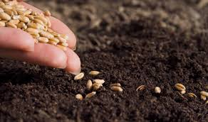
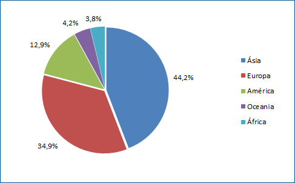

Ciclo da cultura do Trigo
Alimentos que contém glutém
; Pizza, salgadinhos, hambúrguer e cachorro quente; Salsicha, outros embutidos e alguns queijos; Cerveja e bebidas com malte; Gérmen de trigo, triguilho, bulgur e sêmola de trigo; Molhos como, ketchup, molho branco, maionese, shoyu e outros molhos industrializados; Levedura de cerveja; Temperos prontos e sopas desidratadas; Barras de cereais; Alguns suplementos nutricionais. A aveia é um alimento que não contém glúten, no entanto durante o seu plantio e processo de produção, esse cereal pode ser contaminado com trigo, cevada ou centeio, já que normalmente são processados nos mesmos locais, sendo importante consumir a aveia pura ou "livre de glúten".
.jpg)
Importância
Cultura essencial para a segurança alimentar, o trigo é o alimento básico para mais de um terço da população mundial e contribui para quase 20% do total de calorias e proteínas consumidas pelas pessoas, mais do que qualquer outra fonte alimentar. E é também uma importante fonte de vitaminas e minerais.
.jpg)
Maiores Produtores
O Rio Grande do Sul é o maior produtor no Brasil, com uma média de 3,6 milhões de toneladas/ano no período 2020-2022. O Paraná apareceu na sequência, com média de 3,3 milhões de toneladas/ano. A produção de trigo no Estado, cultura de inverno altamente suscetível às oscilações de tempo e clima, se caracteriza pela consorciação com a produção de soja e de milho, cultivadas no verão. Por isso, as quantidades produzidas anualmente sofrem variações consideráveis e as regiões maiores produtoras no Rio Grande do Sul são praticamente as mesmas e se localizam principalmente na porção norte e noroeste do Estado. Os municípios de Palmeira das Missões, Cruz Alta, São Luiz Gonzaga, Giruá, Joia e Santa Bárbara do Sul se destacaram no período 2020-2022, com produção média superior a 60 mil toneladas/ano.
Espécies de Trigo
Trigo comum - (T. aestivum) Uma espécie hexaploide que é a mais cultivada no mundo. Triticum monococcum - Uma espécie diploide com variedades selvagens e domesticadas. Foi uma das primeiras espécies cultivadas, mas raramente utilizada atualmente. Farro - (T. turgidum var. dicoccum) Uma espécie tetraploide com variedades selvagens e domesticadas. Cultivada em tempos antigos, mas pouco atualmente. É de farro que vem a palavra farinha. Trigo duro - (T. turgidum var. durum) A única variedade tetraploide largamente usada hoje. Kamut® - (T. turgidum var. polonicum) Uma variedade tetraploide cultivada em pequenas quantidades, mas extensivamente comercializada. Originária do Médio Oriente Espelta - (T. spelta) Outra espécie hexaploide cultivada em pequenas quantidades.
.jpg)